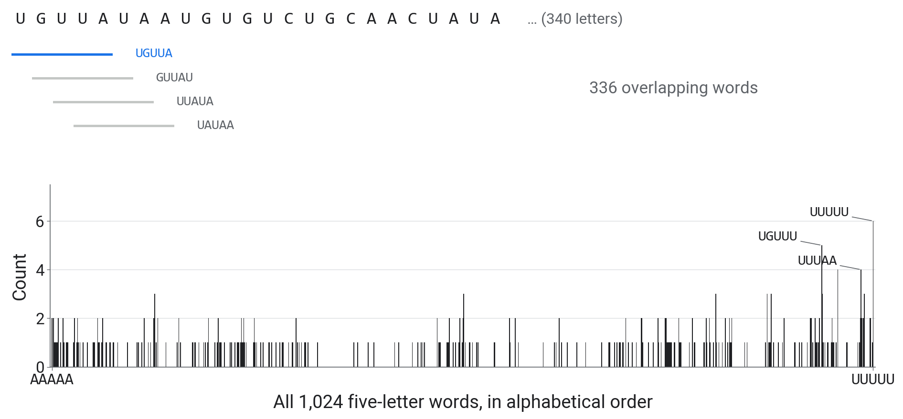
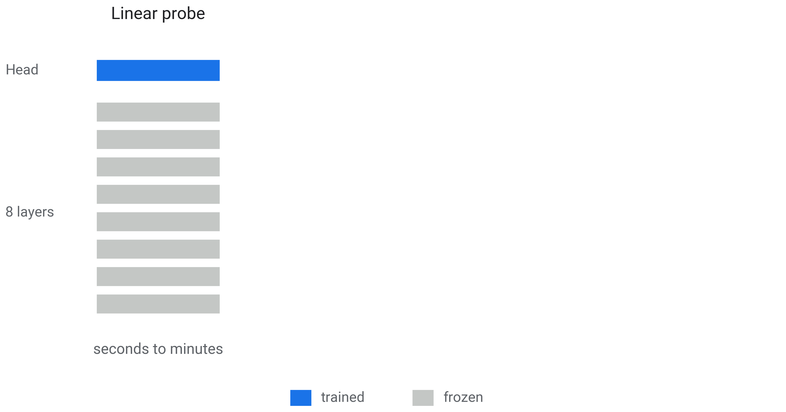
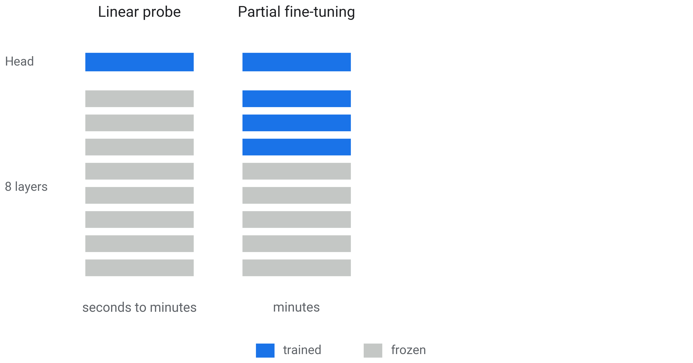
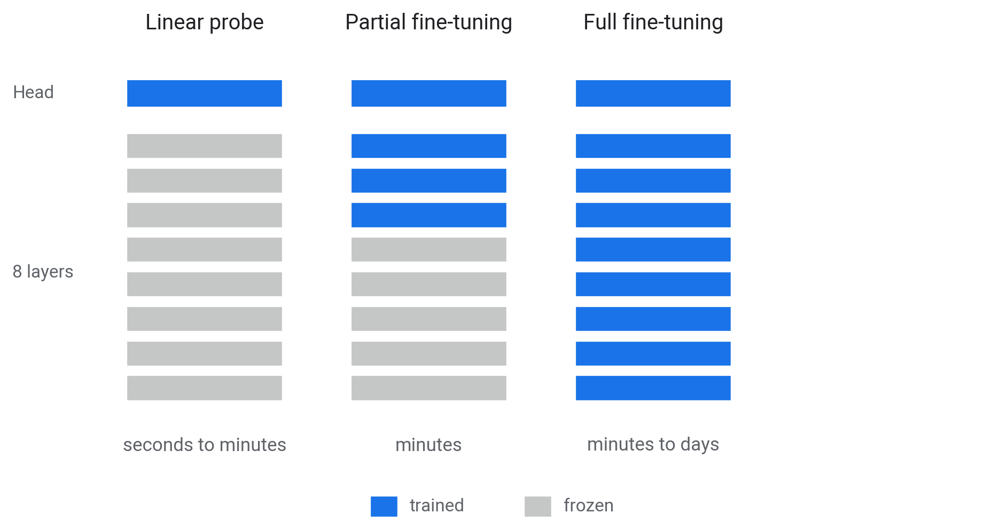
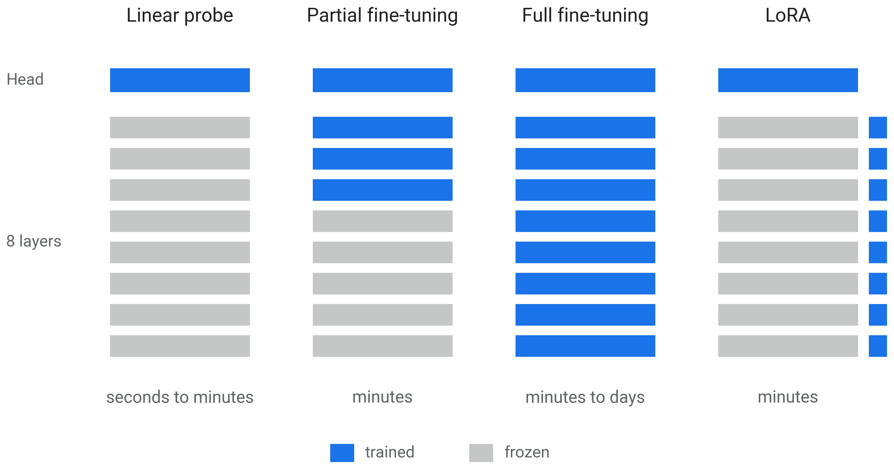
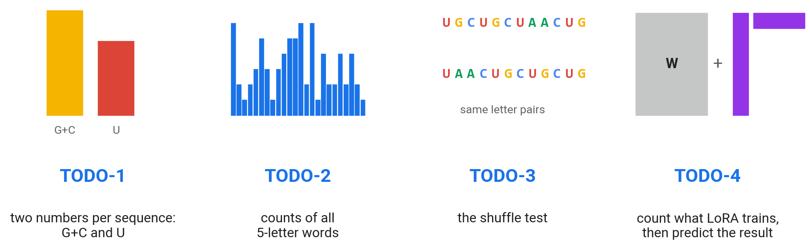
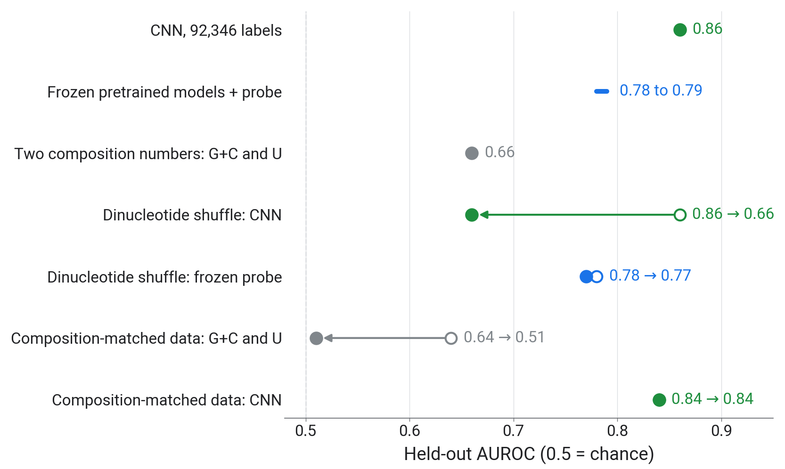

Faculty of Biotechnology and Food Engineering Technion Israel Institute of Technology
Mattan Hoory
1 Simpler explanations
1.1 The two classes differ in composition
A shortcut is a simple property that differs between the classes in this data set, such as GC
Before crediting a model with biology, measure what much simpler features achieve
1.2 Word counts: a model without order
Count every 5-letter word in a sequence: 1,024 numbers, one per possible word

1.3 The dinucleotide shuffle test
A dinucleotide is a pair of neighbouring letters. The shuffle keeps every letter and dinucleotide count and scrambles everything longer, including where sites sit
2 A control
2.1 Composition-matched data
Bin every sequence by GC, U and length; in each bin keep as many unbound as bound
Bound and unbound then have the same single-letter composition and length; letter pairs and longer words can still differ
3 Fine-tuning
3.1 Four ways to adapt a pretrained model




4 Hands-on
4.1 Your turn
Open 03_shortcuts_and_controls.ipynb; it starts from our CNN and our embeddings.

5 Beyond the notebook
5.1 Test AUROC against the number of labels
6 Wrap-up
6.1 The day in numbers

Held-out AUROC. The matched-data rows use their own 3,000-sequence test set, so their numbers differ slightly from the 1,000-sequence rows.
6.2 Ten pretrained models on matched data
6.3 Conclusions
A CNN read AGO2 binding from the RNA letters alone: AUROC 0.86
Two composition numbers, GC and U, already reached 0.66: check simple baselines first
Shuffles and matched data show what a model uses: the CNN fell from 0.86 to 0.66 when shuffled (the shuffle also moves the site), GC and U fell to chance on matched data
With few labels (below about 2,500) a frozen pretrained model with a probe beat the CNN; with 20,000 labels fine-tuning reached 0.87 against the CNN’s 0.84
6.4 Feedback
Two minutes: what should change for your background?
forms.gle/NfE6ZHj98ri3WYmG6
Notebooks and slides stay online: mathoory.github.io/ai-days-2026-dna-workshop
6.5 Credits and further reading
Data: Maticzka et al. (2014) GraphProt, Genome Biology (the CLIP benchmark and its negatives). Pan and Shen (2018) iDeepE, Bioinformatics (the CNN design we follow).
I. Ullah, KAUST Genomic Foundation Models workshop (2026): pipeline ideas, used with permission. github.com/bioinfo-kaust/gfm-workshop
R. Mourad and B. Batut, Galaxy Training Network: pretraining and fine-tuning an LLM on DNA (CC-BY); R. Mourad (2024), Mistral-DNA models.
Dalla-Torre et al. (2024) Nucleotide Transformer, Nature Methods. Zhou et al. (2024) DNABERT-2, ICLR. Nguyen et al. (2023) HyenaDNA, NeurIPS. Nguyen et al. (2024) Evo, Science. Brixi et al. (2025) Evo 2.
Hu et al. (2021) LoRA. Tang and Koo (2024) Evaluating the representational power of pre-trained DNA language models for regulatory genomics.
Altschul and Erickson (1985) dinucleotide shuffle. Tareen and Kinney (2020) logomaker.